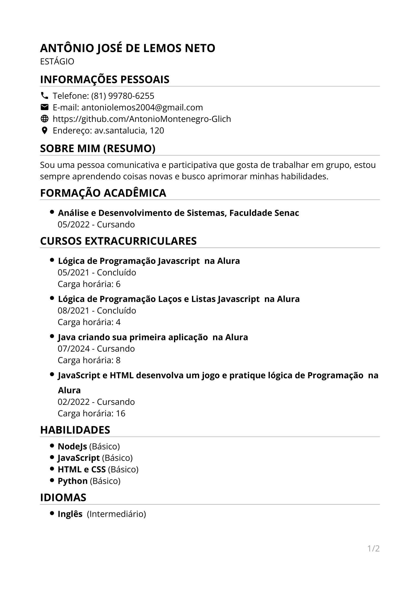

ANTÔNIO JOSÉ DE LEMOS NETO
ESTÁGIO
INFORMAÇÕES PESSOAIS
📞 Telefone: (81) 99780-6255
📧 E-mail: antoniolemos2004@gmail.com
🌐 GitHub:
github.com/AntonioMontenegro-Glich
📷 Instagram:
instagram.com/antonio_jose02
📍 Endereço: av. santalucia, 120
SOBRE MIM (RESUMO)
Sou uma pessoa comunicativa e participativa que gosta de trabalhar em grupo, estou sempre aprendendo coisas novas e busco aprimorar minhas habilidades.
FORMAÇÃO ACADÊMICA
- Análise e Desenvolvimento de Sistemas, Faculdade Senac
05/2022 - Cursando
CURSOS EXTRACURRICULARES
- Lógica de Programação Javascript - Alura
05/2021 - Concluído
Carga horária: 6
- Lógica de Programação Laços e Listas Javascript - Alura
08/2021 - Concluído
Carga horária: 4
- Java criando sua primeira aplicação - Alura
07/2024 - Cursando
Carga horária: 8
- JavaScript e HTML: Desenvolva um jogo e pratique lógica de programação - Alura
02/2022 - Cursando
Carga horária: 16
ATIVIDADES EXTRA-CURRICULARES
- Curso de inglês - Advanced Inglês
05/2014 - 05/2026
Aprendendo mais sobre a língua inglesa para me comunicar melhor no ambiente de trabalho e para uso pessoal.
HABILIDADES
- NodeJS (Básico)
- JavaScript (Básico)
- HTML e CSS (Básico)
- Python (Básico)
IDIOMAS
Imagem do Currículo
